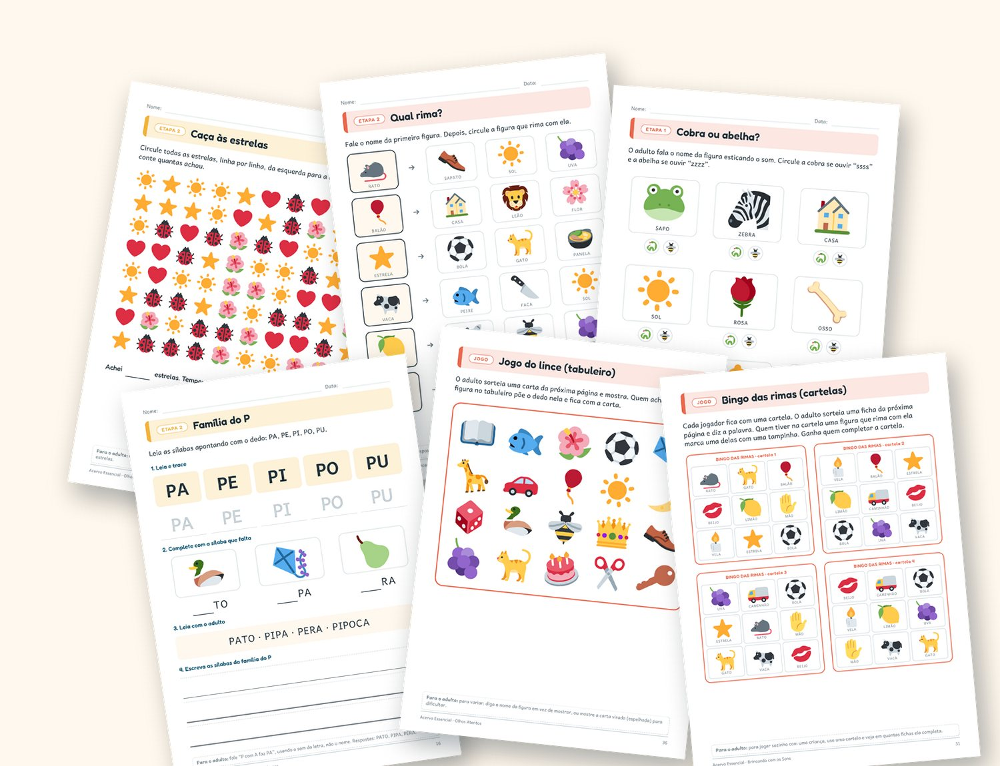

Amostra grátis: 16 páginas
Baixe, sem cadastro, 16 páginas do Brincando com os Sons: o guia do adulto completo, uma atividade de cada etapa e 10 brincadeiras sem papel.
Pode imprimir e compartilhar a amostra, sem alterações.

Rimas, sílabas, leitura, fala e atenção em 4 cadernos coloridos, com guia para o adulto e um plano de 6 semanas. É só imprimir e sentar junto.
R$ 39,90 os 4 cadernos no Kit Completo · ou R$ 19,90 cada

Toque numa página para ver em tamanho grande. Arraste para o lado para ver mais.
Rimas, palmas, sílabas, primeiros sons e as primeiras letras: a base para aprender a ler. 40 páginas, 19 atividades.
Vogais, 10 famílias de sílabas, palavras, frases e os primeiros textos. 48 páginas, 26 atividades.
Ouvir e falar o som do S e o som do Z, do som sozinho até frases e histórias. 42 páginas, 24 atividades.
Olhar, procurar, lembrar e copiar, com labirintos, caça-figuras e jogos. 43 páginas, 24 atividades.
Isto é tudo o que você recebe. Toque num caderno para ampliar.
4 cadernos.
173 páginas.
1 plano pronto.
7 dias de garantia: não gostou, pede o dinheiro de volta
Sons, letras, fala e atenção: 173 páginas para imprimir, cada caderno com guia do adulto baseado em pesquisa, avaliação de início e fim e plano de 6 semanas.
| Brincando com os Sons consciência fonológica, 4 a 6 anos, 40 páginas | R$ 19,90 |
| Letras que Viram Palavras alfabetização, 5 a 7 anos, 48 páginas | R$ 19,90 |
| Cobra e Abelha sons do S e do Z, 4 a 7 anos, 42 páginas | R$ 19,90 |
| Olhos Atentos atenção visual, 4 a 7 anos, 43 páginas | R$ 19,90 |
| Comprando separados | R$ 79,60 |
Você economiza R$ 39,70
Pagamento único, cerca de R$ 0,23 por página. Os cadernos também são vendidos separados, por R$ 19,90 cada.
Quero o Kit Completo agoraCompra processada pela Eduzz.
Você tem 7 dias para desistir da compra, conforme o Código de Defesa do Consumidor.
Cada caderno começa com 6 páginas para o adulto: o que fazer, em que ordem, como reagir quando a criança erra e quando procurar um profissional.
maior foi o efeito quando os pais ensinaram habilidades de leitura com atividades guiadas, em comparação com só ler para a criança.
Fonte: Sénéchal, M. e Young, L. (2008). Review of Educational Research, 78(4), 880-907. Efeito médio de 1,15 contra 0,18.
Baixe, sem cadastro, 16 páginas do Brincando com os Sons: o guia do adulto completo, uma atividade de cada etapa e 10 brincadeiras sem papel.
Pode imprimir e compartilhar a amostra, sem alterações.
Não. São arquivos em PDF, para imprimir em A4 em casa ou na escola, quantas vezes quiser.
Os quatro cadernos inteiros: Brincando com os Sons, Letras que Viram Palavras, Cobra e Abelha e Olhos Atentos, somando 173 páginas. Separados, custam R$ 79,60; no kit, R$ 39,90.
A compra é feita pela Eduzz. Depois da confirmação do pagamento, você recebe o acesso aos PDFs no e-mail cadastrado.
Não. São materiais de apoio. Eles não fazem diagnóstico e não substituem professor, psicopedagogo, fonoaudiólogo ou outro profissional.
Sim. Você pode imprimir quantas vezes quiser para usar com seus filhos, alunos ou pacientes. Só não pode revender nem compartilhar o arquivo. Os detalhes estão nos termos.
Garantia de 7 dias · Pagamento pela Eduzz · PDFs no seu e-mail